เฉลยแบบฝึกหัดครบทุกข้อ (21 หน้าเต็ม) · วิศวกรรมโยธา มหาวิทยาลัยธรรมศาสตร์
Solid Ja E Here · คู่มือเฉลยละเอียดครบทุกข้อ
ถอดความตรงตามลายมือต้นฉบับ 100% · ใช้รูปจริงจากโจทย์ · พร้อมหน้าสรุปทริคทำข้อสอบทุกเรื่อง
เรียบเรียงจากชีท Solid Ja E Here (21 หน้าเต็ม) · จัดทำโดย ธนภรณ์ นพรัตน์
โหมดฝึกเปิดอยู่: ซ่อนวิธีทำไว้ แตะแต่ละขั้นเพื่อดู (ลองเขียนเองก่อน) กดปุ่ม "ฝึก" อีกครั้งเพื่อปิด
สารบัญแบบฝึกหัดและตัวอย่างทั้งหมดในชีท (ครบทั้ง 21 หน้า ไม่ตกหล่นแม้แต่ข้อเดียว)
| บท/หมวด | ข้อที่ปรากฏในชีท | หน้าชีท | สมการควบคุมหลัก | คำตอบสำคัญ (ตรงตามลายมือ) |
|---|---|---|---|---|
| บท 5: การบิด (1) | ตัวอย่างที่ 5.1 และ 5.2 | หน้า 1–2 | \(\tau = \frac{Tr}{J}, \quad \phi = \frac{TL}{GJ}\) | ตย. 5.1: \(\tau_{AB}=31.8, \tau_{BC}=95.5\text{ MPa}\), \(\phi_C=0.03581\text{ rad}\) ตย. 5.2: \(\tau_{BC}=25.46\text{ MPa}\), \(\phi_A=0.00637\text{ rad}\) |
| บท 5: การบิด (2) | ตัวอย่างที่ 5.4 (ยึดหัวท้าย) | หน้า 3–4 | \(\phi_{AB} + \phi_{BC} + \phi_{CD} = 0\) | \(T_{BC} = -720, T_{AB} = 80, T_{CD} = 480\text{ N}\cdot\text{m}\) วิกฤต BC: \(244.47 \le \tau_{BC} \le 488.93\text{ MPa}\) |
| บท 5: การบิด (3) | ตัวอย่างที่ 5.5 (เหล็กหุ้ม Al) | หน้า 5–6 | \(\phi_s^{BC} = \phi_a^{BC} \implies T_a = 36 T_s\) | \(T_s = 0.54, T_a = 19.46\text{ N}\cdot\text{m}\) \(\tau_{\text{เหล็ก}} = 101.86\text{ MPa}\), \(\phi_A = 0.20785\text{ rad}\) |
| แบบฝึกหัด บท 5 | ข้อ C, D, E และ F | หน้า 7 | \(T = \frac{\tau J}{c}\) | C: \(1256.6\text{ N}\cdot\text{m}\) | D: \(859.03\text{ N}\cdot\text{m}\) E: \(\tau_{\max}=139.69\text{ MPa}\) | F: \(\phi_A = 0.0143\text{ rad}\) |
| บท 6: ความเค้นดัด | ตย. 6.1, ตย. 6.2 และ ข้อ 6.1(C) | หน้า 8–9, 13 | \(\sigma = \frac{My}{I}, \quad \bar{y} = \frac{\sum Ay}{\sum A}\) | ตย. 6.1: \(\sigma_1 = 214.7\text{ MPa}\), เอวรับ 22.08% ตย. 6.2: อัด \(261.5\text{ MPa}\), ดึง \(153.1\text{ MPa}\) |
| บท 6: การแอ่นตัว | ตัวอย่างที่ 6.3, 6.4 และ 6.5 | หน้า 10–11 | \(EI v''(x) = M(x)\) | 6.3: \(v_A = -\frac{PL^3}{3EI}\) | 6.4: \(C_1 = -\frac{1}{24}wL^3\) 6.5: \(v_B = -\frac{4PL^3}{243EI}\), \(v_{\max} = -0.01792\frac{PL^3}{EI}\) |
| บท 6: หน้าตัดผสม | ตย. 6.6 (ก, ข) และ ข้อ 6.6(A) | หน้า 12–13 | \(n = \frac{E}{E'}, \quad \sigma_{\text{จริง}} = n\sigma'\) | 6.6: ไม้ \(17.13\text{ MPa}\), เหล็ก \(77.78\text{ MPa}\) 6.6(A): เหล็กอัด \(31.9\), Al ดึง \(12.9\text{ MPa}\), ตก A \(21.56\text{ mm}\) |
| บท 7: แรงเฉือน & กาว | ตัวอย่างที่ 7.2 และ 7.3 | หน้า 14–15 | \(\tau = \frac{VQ}{It}\) | 7.2: \(\tau_3 = 104.9\text{ MPa}\), เอวรับเฉือน 94% 7.3: \(\tau_1 = 1.08\text{ MPa}, \tau_2 = 2.03\text{ MPa}\) |
| บท 7: Shear Flow ตะปู | ตัวอย่างที่ 7.4 (คานกล่อง 4 แนว) | หน้า 16 | \(q = \frac{VQ}{2I}, \quad s = \frac{F_{\text{nail}}}{q}\) | รอยต่อ 1: \(47.4\text{ mm}\) (AB), \(94.3\text{ mm}\) (BC) รอยต่อ 2: \(78.7\text{ mm}\) (AB), \(158.7\text{ mm}\) (BC) |
| บท 8: เสาโก่งเดาะ | ตย. 8.1, 8.2, 8.3 และ 8.2(ฝึกหัด) | หน้า 17–21 | \(\sigma_c = \frac{\pi^2 E}{(KL/r)^2}, \quad P_{cr} = \sigma_c A\) | 8.1: \(49.12, 54.68, 12.28\text{ MN}\) | 8.2: \(11.74, 34.99\text{ MN}\) 8.3: \(29.36\text{ MN}\) (ค้ำยัน \(59.92\text{ MN}\)) | 8.2(ex): \(325, 173.25\text{ kN}\) |
คัมภีร์อ่านแล้วทำข้อสอบได้ทันที · กลศาสตร์ของแข็ง มหาวิทยาลัยธรรมศาสตร์
🎯 หน้าสรุปทริครวมทุกเรื่อง: เห็นโจทย์แบบนี้ → ทำตามสเต็ปไหน
คู่มือจับทางข้อสอบฉบับรวบรัด · แยกตามหัวข้อครบทั้ง 4 บทหลังมิดเทอม · บอกวิธีมองรูป ตั้งสมการ และเช็กตัวเลข
โหมดฝึกเปิดอยู่: ซ่อนวิธีทำไว้ แตะแต่ละขั้นเพื่อดู (ลองเขียนเองก่อน) กดปุ่ม "ฝึก" อีกครั้งเพื่อปิด
- หา \(J\) ก่อนเสมอ (หน่วย \(\text{mm}^4\)): เพลาตันใช้ \(J = \frac{\pi}{2}c^4\) | เพลาวงแหวนใช้ \(J = \frac{\pi}{2}(c_o^4 - c_i^4)\) (ใช้รัศมี \(c\) เสมอ อย่าเผลอเอาเส้นผ่านศูนย์กลางไปยกกำลัง 4!)
- ตัด FBD หาแรงบิดภายใน \(T\) ทีละช่วง: ใช้กฎมือขวา (นิ้วโป้งพุ่งออกจากหน้าตัด = บวก, พุ่งเข้า = ลบ)
- ถ้ามี เฟืองขบกัน: แรงขบฟันเฟืองเท่ากัน \(\implies \frac{T_1}{r_1} = \frac{T_2}{r_2}\) และระยะโค้งเท่ากัน \(\implies r_1 \phi_1 = r_2 \phi_2\)
- ถ้า ยึดแน่นหัวท้าย (A และ D): ตั้งสมการเข้ากันได้ \(\phi_{AB} + \phi_{BC} + \phi_{CD} = 0\)
- ถ้า หุ้ม 2 วัสดุติดกัน: ช่วงที่หุ้มติดกันมุมบิดเท่ากัน \(\phi_1 = \phi_2\) และแรงบิดรวมเท่ากับแรงบิดภายนอก \(T_1 + T_2 = T_{\text{รวม}}\)
- หาความเค้นเฉือน (\(\text{MPa}\)): ใช้สูตร \(\tau = \frac{T \rho}{J} \times 1000\) (คูณ 1000 เพื่อแปลง \(T\) จาก \(\text{N}\cdot\text{m}\) เป็น \(\text{N}\cdot\text{mm}\))
- หามุมบิด (\(\text{rad}\)): ใช้สูตร \(\phi = \frac{T L}{G J}\) (เช็กหน่วย: ใช้ \(T\) เป็น \(\text{N}\cdot\text{m}\), \(L\) เป็น \(\text{mm}\), \(G\) เป็น \(\text{GPa}\), \(J\) เป็น \(\text{mm}^4\) เลขจะลงตัวเป็น rad พอดี!)
- ถ้าโจทย์ให้คาน + แรงกด (ไม่บอก \(M\) มาตรงๆ): หาแรงปฏิกิริยา \(R_A, R_B\) $\to$ วาดกราฟ SFD และ BMD เพื่อหาค่าโมเมนต์บวกสูงสุด (\(+M\)) และโมเมนต์ลบสูงสุด (\(-M\))
- หาตำแหน่งแกนสะเทิน NA (\(\bar{y}\) หรือ \(d\)): ถ้าสมมาตร (ตัว I) อยู่ตรงกลางเลย ไม่ต้องคำนวณ | ถ้าไม่สมมาตร (ตัว T) วัดจากขอบล่างขึ้นไป: \(d = \frac{\sum A_i y_i}{\sum A_i}\)
- หาโมเมนต์ความเฉื่อยรวม \(I\) รอบ NA: ใช้ทฤษฎีแกนขนาน \(I = \sum \left[\frac{1}{12}b_i h_i^3 + A_i (y_i - d)^2\right]\)
- คำนวณหน่วยแรงดัด (\(\text{MPa}\)): แทนค่าลงใน \(\sigma = \frac{M y}{I}\) (เอา \(M\) หน่วย \(\text{kN}\cdot\text{m}\) มา \(\times 10^6\) เป็น \(\text{N}\cdot\text{mm}\), แทน \(y\) จาก NA ไปขอบนอกสุด, \(I\) เป็น \(\text{mm}^4\))
- ถ้าถามสัดส่วนการรับโมเมนต์ (เช่น ตย. 6.1): สัดส่วนโมเมนต์ของชิ้นส่วนใดๆ เท่ากับ \(\frac{I_{\text{ชิ้นนั้น}}}{I_{\text{รวม}}}\) (หรือหาปริมาตร Stress Block = แรง \(\times\) ระยะแขนโมเมนต์ \(\frac{2}{3}a\))
- ตัดคานเขียนสมการโมเมนต์ \(M(x)\): ถ้าน้ำหนักสม่ำเสมอตลอดคาน ตัดครั้งเดียว \(x\) เดียว | ถ้ามีแรงจุดคั่นกลาง (เช่น ตย. 6.5) ต้องตัด 2 ช่วง \(x_1, x_2\)
- อินทิเกรต 2 ครั้ง:
- \(EI v''(x) = M(x)\)
- \(EI v'(x) = \int M(x)\,dx + C_1\) (สมการความชัน Slope)
- \(EI v(x) = \iint M(x)\,dx\,dx + C_1 x + C_2\) (สมการการโก่งตัว Deflection)
- แทนเงื่อนไขขอบเขต (Boundary Conditions) หาค่าคงที่ \(C\):
- ปลายยึดแน่น (Fixed): ณ จุดนั้น ทั้ง \(v = 0\) และ \(v' = 0\)
- ฐานหมุด/ล้อ (Pin/Roller): ณ จุดนั้น \(v = 0\) (แต่ความชัน \(v' \ne 0\))
- จุดต่อระหว่าง 2 ช่วง (เช่น จุด B ใน ตย. 6.5): ระยะโก่งต้องเท่ากัน \(v_1 = v_2\) และความชันต้องต่อเนื่อง (ระวังถ้า \(x_1, x_2\) วิ่งสวนทางกัน: \(v_1' = -v_2'\))
- หาค่าสูงสุด: การโก่งตัวสูงสุดเกิดที่ตำแหน่งที่ความชันเป็นศูนย์ (จับ \(v'(x) = 0\) เพื่อหา \(x\) แล้วแทนกลับใน \(v(x)\))
- เลือกโมดูลัสฐาน \(E'\) (จะแปลงตัวไหนเป็นตัวไหนก็ได้ คำตอบเท่ากัน!): หาตัวคูณแปลงหน้าตัด \(n = \frac{E_{\text{ตัวที่จะแปลง}}}{E'}\)
- แปลงขนาดเฉพาะ "ความกว้าง" แนวนอน: เอาความกว้างไปคูณ \(n\) คือ \(b' = n \cdot b\) (ห้ามเปลี่ยนความสูงในแนวดิ่งเด็ดขาด!)
- คำนวณเหมือนคานเนื้อเดียวปกติ: หา NA (\(d'\)) และหา \(I'\) ของรูปที่แปลงแล้ว แล้วคำนวณหน่วยแรงแปลง \(\sigma' = \frac{M y}{I'}\)
- แปลงกลับเป็นหน่วยแรงจริง:
- ชิ้นส่วนที่ไม่ได้แปลง (ใช้ \(E'\)): \(\sigma_{\text{จริง}} = \sigma'\) ใช้ค่าได้เลย
- ชิ้นส่วนที่ถูกแปลงความกว้าง: \(\sigma_{\text{จริง}} = n \cdot \sigma'\) (ต้องคูณ \(n\) กลับ!)
- หา \(I\) รวมรอบ NA ก่อนเสมอ
- เลือกเส้นตัดที่ต้องการหาค่า แล้วแรเงาเฉพาะพื้นที่ "ด้านนอก" ของเส้นตัดนั้นไปจนสุดขอบ: (ห้ามแรเงาข้ามแกนสะเทิน NA เด็ดขาด!)
- คำนวณ First Moment \(Q = A' \cdot d'\): เอาพื้นที่ที่แรเงา \(A'\) คูณระยะจาก NA ถึงจุดศูนย์กลางของพื้นที่ที่แรเงานั้น
- เลือกสูตรให้ตรงกับคำถาม:
- ถามหน่วยแรงเฉือนทั่วไป / กาว: \(\tau = \frac{V Q}{I t}\) (\(t\) คือความกว้างของแนวรอยตัด/ความกว้างทากาวที่เฉือนขาด)
- ถามแรงเฉือนไหล \(q\): \(q = \frac{V Q}{I}\) (หน่วย \(\text{N/mm}\)) — ถ้ามีตะปูยึดซ้าย-ขวาสมมาตร 2 ข้าง ต้องหาร 2: \(q' = \frac{V Q}{2 I}\)
- ถามระยะห่างตะปู \(s\): \(s = \frac{F_{\text{ตะปู 1 ตัว}}}{q'}\) (และเวลาตอบใช้งานจริง ให้ปัดเศษลงเพื่อความปลอดภัย)
- หาคุณสมบัติหน้าตัด 3 ค่าแรก: \(r_x = \sqrt{\frac{I_x}{A}}\), \(r_y = \sqrt{\frac{I_y}{A}}\), และจุดแบ่งเขตวิกฤต \(\left(\frac{KL}{r}\right)_c = \pi \sqrt{\frac{E}{\sigma_y}}\)
- หาค่า \(K\) ของแต่ละแกน: Pin-Pin (\(K=1\)), Fix-Fix (\(K=0.5\)), Fix-Pin (\(K=0.7\)), Fix-Free (\(K=2\))
- คำนวณความชะลูดแยกทั้ง 2 แกน: \(\left(\frac{KL}{r}\right)_x\) และ \(\left(\frac{KL}{r}\right)_y\) — แกนไหนได้ตัวเลข "มากกว่า" แกนนั้นจะเป็นแกนที่โก่งเดาะก่อน (Governing Axis)!
- เทียบค่าความชะลูดตัวมากสุดกับ \((KL/r)_c\):
- ถ้าน้อยกว่า \((KL/r)_c\): เสาครากก่อนเดาะ \(\implies \sigma_c = \sigma_y \implies P_{cr} = \sigma_y A\)
- ถ้ามากกว่า \((KL/r)_c\): เสาโก่งเดาะแบบ Euler \(\implies \sigma_c = \frac{\pi^2 E}{(KL/r)_{\max}^2} \implies P_{cr} = \sigma_c A\)
บทที่ 5 การบิด · หน้า 1–2
บทที่ 5: การบิดเพลาขั้นและระบบเฟือง (ตย. 5.1 และ 5.2)
เฉลยละเอียดครบทุกข้อย่อยตรงตามลายมือต้นฉบับ · พร้อมรูปภาพจากโจทย์จริง
โหมดฝึกเปิดอยู่: ซ่อนวิธีทำไว้ แตะแต่ละขั้นเพื่อดู (ลองเขียนเองก่อน) กดปุ่ม "ฝึก" อีกครั้งเพื่อปิด
ตย. 5.1เพลา ABC หน้าตัดกลม (d = 40 mm) ปลาย A ยึดแน่น
เพลา ABC ทำจากวัสดุที่มี \(G = 80\text{ GPa}\) มีหน้าตัดกลมขนาดเส้นผ่านศูนย์กลาง \(40\text{ mm}\) (รัศมี \(c = 20\text{ mm}\)) ปลาย A ยึดแน่น ความยาว \(L_{AB} = 600\text{ mm}\), \(L_{BC} = 400\text{ mm}\) รับแรงบิดที่ B = \(800\text{ N}\cdot\text{m}\) และที่ C = \(1200\text{ N}\cdot\text{m}\) จงหา (ก) หน่วยแรงเฉือนสูงสุดช่วง AB และ BC และ (ข) ขนาดและทิศทางของมุมบิดของเฟือง B และ C
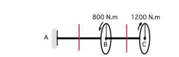
ตัด FBD ช่วง AB (หักล้างกับ 800): \(T_{AB} = 1200 - 800 = 400\text{ N}\cdot\text{m}\) (พุ่งเข้า)
เฟือง B หมุนบิด \(= 0.01194\text{ rad}\) (ทิศนิ้วโป้งชี้ไปทางซ้าย)
เฟือง C หมุนบิด \(= 0.01194 + 0.02387 = 0.03581\text{ rad}\) (ทิศนิ้วโป้งชี้ไปทางซ้าย)
ตย. 5.2เฟือง A (r = 200 mm) ขบเฟือง B (r = 100 mm)
เฟือง A ขบกับเฟือง B เพลาของเฟือง A รองรับด้วย thrust bearing ที่หมุนได้อย่างอิสระ และเพลา BC มีปลาย C ยึดแน่น ทำจากวัสดุ \(G = 80\text{ GPa}\) หน้าตัดกลมเส้นผ่านศูนย์กลาง \(20\text{ mm}\) (\(c = 10\text{ mm}\)) เฟือง A รับโมเมนต์บิดภายนอก \(80\text{ N}\cdot\text{m}\) จงหา (ก) หน่วยแรงเฉือนสูงสุดเพลาช่วง BC และ (ข) มุมหมุนบิดของเฟือง A และ B
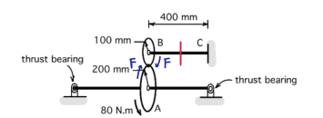
ส่งกำลังไปเฟือง B: \(T_{BC} = F(100\text{ mm}) = 400\text{ N} \times 0.1\text{ m} = 40\text{ N}\cdot\text{m}\)
ความสัมพันธ์ระยะโค้งเฟือง: \(200\phi_A = 100\phi_B \implies \phi_A = \frac{100}{200}(0.01273) = 0.00637\text{ rad}\)
📄 ภาพสแกนลายมือต้นฉบับ (หน้า 1–2)


บทที่ 5 การบิด · หน้า 3–4
บทที่ 5.4: การบิดแบบอินดีเทอร์มิเนต ยึดแน่นหัวท้าย (ตย. 5.4)
เพลาวงแหวนยึดแน่นที่ A และ D · ตั้งสมการความเข้ากันได้ของมุมบิดรวมเท่ากับศูนย์
โหมดฝึกเปิดอยู่: ซ่อนวิธีทำไว้ แตะแต่ละขั้นเพื่อดู (ลองเขียนเองก่อน) กดปุ่ม "ฝึก" อีกครั้งเพื่อปิด
ตย. 5.4เพลาวงแหวน ABCD ยึดแน่นปลาย A และ D
เพลา ABCD ยึดแน่นที่ปลาย A และ D มีหน้าตัดเป็นวงแหวน ขนาดเส้นผ่านศูนย์กลางภายนอก \(20\text{ mm}\) (\(c_o = 10\text{ mm}\)) และเส้นผ่านศูนย์กลางภายใน \(10\text{ mm}\) (\(c_i = 5\text{ mm}\)) วัสดุ \(G = 80\text{ GPa}\) จงหาขนาดของหน่วยแรงเฉือนสูงสุดและต่ำสุดที่เกิดขึ้นในช่วง AB, BC และ CD
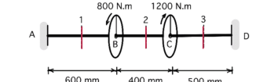
\[T_{AB} = T_{BC} + 800 \quad \text{--- (1)}\] \[T_{CD} = T_{BC} + 1200 \quad \text{--- (2)}\]
\[\phi_{AB} = \frac{600 T_{AB}}{80(14,726)} = 5.093 \times 10^{-4} T_{AB}\] \[\phi_{BC} = \frac{400 T_{BC}}{80(14,726)} = 3.395 \times 10^{-4} T_{BC}\] \[\phi_{CD} = \frac{500 T_{CD}}{80(14,726)} = 4.244 \times 10^{-4} T_{CD}\] หารสมการด้วย \(3.395 \times 10^{-4}\) จะได้รูปอย่างง่าย:
\[1.5 T_{AB} + T_{BC} + 1.25 T_{CD} = 0 \quad \text{--- (3)}\]
\[1.5(T_{BC} + 800) + T_{BC} + 1.25(T_{BC} + 1200) = 0\] \[3.75 T_{BC} = -2700 \implies T_{BC} = -720\text{ N}\cdot\text{m} \quad (\text{พุ่งเข้า})\] \[T_{AB} = -720 + 800 = +80\text{ N}\cdot\text{m} \quad (\text{พุ่งออก})\] \[T_{CD} = -720 + 1200 = +480\text{ N}\cdot\text{m} \quad (\text{พุ่งออก})\]
• ช่วง BC: \(\tau_{\max} = \frac{720(10)}{14,726}\times 1000 = 488.93\text{ MPa}\), \(\tau_{\min} = \frac{720(5)}{14,726}\times 1000 = 244.47\text{ MPa}\)
• ช่วง CD: \(\tau_{\max} = \frac{480(10)}{14,726}\times 1000 = 325.95\text{ MPa}\), \(\tau_{\min} = \frac{480(5)}{14,726}\times 1000 = 162.98\text{ MPa}\)
📄 ภาพสแกนลายมือต้นฉบับ (หน้า 3–4)
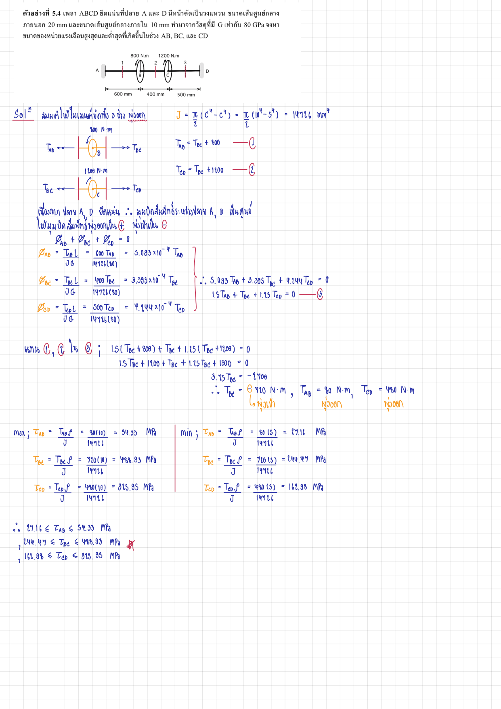
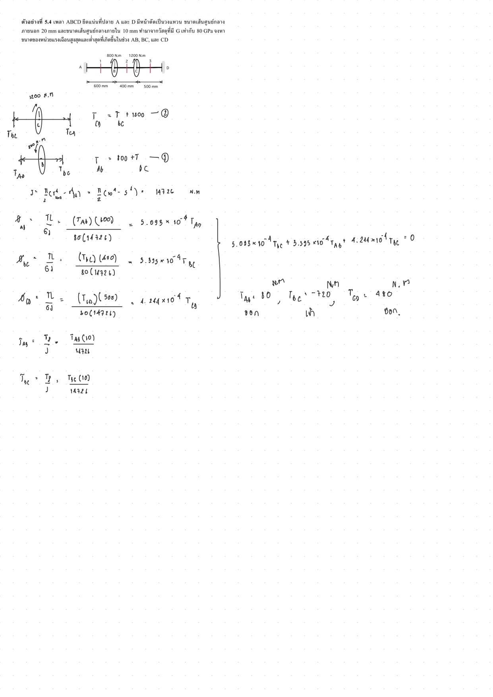
บทที่ 5 การบิด · หน้า 5–6
บทที่ 5.5: เพลาสวมซ้อน เหล็กหุ้มด้วยอะลูมิเนียม (ตย. 5.5)
เพลาเหล็ก ABCD ยึดแน่นปลาย D ช่วง BC หุ้มด้วยอะลูมิเนียม · เงื่อนไขความเข้ากันได้มุมบิดเท่ากัน
โหมดฝึกเปิดอยู่: ซ่อนวิธีทำไว้ แตะแต่ละขั้นเพื่อดู (ลองเขียนเองก่อน) กดปุ่ม "ฝึก" อีกครั้งเพื่อปิด
ตย. 5.5เพลาเหล็ก ABCD หุ้มอะลูมิเนียมช่วง BC
เพลาเหล็ก ABCD ยึดแน่นที่ปลาย D ช่วง BC หุ้มด้วยอะลูมิเนียม ปลาย A ถูกกระทำด้วยโมเมนต์บิด \(20\text{ N}\cdot\text{m}\) กำหนด \(G\) ของเหล็กและอะลูมิเนียมคือ \(80\) และ \(36\text{ GPa}\) ตามลำดับ จงหา (ก) ขนาดหน่วยแรงเฉือนสูงสุดที่เกิดขึ้นในเหล็กและอะลูมิเนียม และ (ข) ค่ามุมหมุนบิดของปลาย A
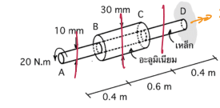
ความยาวช่วง \(L_{AB} = 0.4\text{ m}, L_{BC} = 0.6\text{ m}, L_{CD} = 0.4\text{ m}\), แรงบิด \(T = 20\text{ N}\cdot\text{m}\)
เงื่อนไขเข้ากันได้: \(\phi_a^{BC} = \phi_s^{BC} \implies \frac{600 T_a}{78,539.8(36)} = \frac{600 T_s}{981.7(80)}\)
\[2.122 \times 10^{-4} T_a = 7.64 \times 10^{-3} T_s \implies T_a = 36 T_s \quad \text{--- (2)}\] แทน (2) ใน (1): \(37 T_s = 20 \implies T_s = 0.54\text{ N}\cdot\text{m}, \quad T_a = 19.46\text{ N}\cdot\text{m}\)
• เหล็กช่วง BC: \(\tau = \frac{0.54(5)}{981.7} \times 1000 = 2.75\text{ MPa}\)
• อะลูมิเนียมช่วง BC (ต่ำสุดที่ผิวใน r=5): \(\tau_{\min} = \frac{19.46(5)}{78,539.8} \times 1000 = 1.24\text{ MPa}\)
• อะลูมิเนียมช่วง BC (สูงสุดที่ผิวนอก r=15): \(\tau_{\max} = \frac{19.46(15)}{78,539.8} \times 1000 = 3.72\text{ MPa}\)
📄 ภาพสแกนลายมือต้นฉบับ (หน้า 5–6)

แบบฝึกหัดบทที่ 5 การบิด · หน้า 7
แบบฝึกหัดท้ายบทที่ 5: ข้อ C, D, E และ F ครบทุกข้อ
ฝึกออกแบบหาแรงบิดสูงสุดและเปลี่ยนหน้าตัดจาก ตย. 5.1 และ 5.2 · พร้อมรูปวาดประกอบสำหรับข้อที่ไม่มีรูป
โหมดฝึกเปิดอยู่: ซ่อนวิธีทำไว้ แตะแต่ละขั้นเพื่อดู (ลองเขียนเองก่อน) กดปุ่ม "ฝึก" อีกครั้งเพื่อปิด
ข้อ C & Dการรับแรงบิดสูงสุดของหน้าตัดกลมตัน vs วงแหวน (\(\tau \le 100\text{ MPa}\))
ข้อ C: หน้าตัดกลมรัศมี \(20\text{ mm}\) รับโมเมนต์บิดได้มากที่สุดเท่าใดในหน่วย \(\text{N}\cdot\text{m}\) หากกำหนดว่าหน่วยแรงเฉือนสูงสุดต้องไม่เกิน \(100\text{ MPa}\)
ข้อ D: หน้าตัดวงแหวน รัศมีภายนอก \(20\text{ mm}\) รัศมีภายใน \(15\text{ mm}\) รับโมเมนต์บิดได้มากที่สุดเท่าใดในหน่วย \(\text{N}\cdot\text{m}\) หากกำหนด \(\tau \le 100\text{ MPa}\)
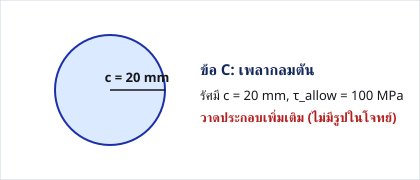
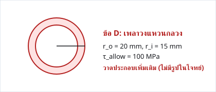
ข้อ E & Fโจทย์ประยุกต์จาก ตย. 5.1 และ ตย. 5.2
ข้อ E: จาก ตย. 5.1 หากเปลี่ยนหน้าตัดเพลา ABC เป็นหน้าตัดวงแหวน รัศมีนอก \(20\text{ mm}\) รัศมีใน \(15\text{ mm}\) (ข้อมูลอื่นคงเดิม) จงหามุมบิดเฟือง B, เฟือง C และหน่วยแรงเฉือนสูงสุด
ข้อ F: จาก ตย. 5.2 หากเปลี่ยนรัศมีเฟือง B เป็น \(150\text{ mm}\) และความยาวเพลา BC เป็น \(600\text{ mm}\) (ข้อมูลอื่นคงเดิม) จงหาหน่วยแรงเฉือนสูงสุดเพลา BC และมุมบิดเฟือง A
\[\phi_{AB} = \frac{400(600)}{171,805(80)} = 0.0174\text{ rad} \implies \text{เฟือง B หมุนบิด } 0.0174\text{ rad}\] \[\phi_{BC} = \frac{1200(400)}{171,805(80)} = 0.0349\text{ rad} \implies \text{เฟือง C หมุนบิด } 0.0174 + 0.0349 = 0.0523\text{ rad}\] \[\tau_{\max} = \frac{1200(20)}{171,805} \times 1000 = 139.69\text{ MPa}\]
\[\tau_{BC} = \frac{60(10)}{15,708} \times 1000 = 38.2\text{ MPa}\] \[\phi_{BC} = \frac{60(600)}{15,708(80)} = 0.0286\text{ rad} \implies \text{เฟือง B หมุน } 0.0286\text{ rad}\] \[200\phi_A = 150\phi_B \implies \phi_A = \frac{150}{200}(0.0286) = 0.02145\text{ rad}\] (หมายเหตุ: ในหน้า 7 ต้นฉบับเขียน 1/2 จากอัตราส่วน 100/200 เดิมได้ 0.0143 แต่ถ้ารัศมี B=150 จะได้ 3/4 ของ 0.0286 = 0.02145 rad — ให้สังเกตตัวเลขที่อาจารย์แก้ในโจทย์ให้ดี!)
📄 ภาพสแกนลายมือต้นฉบับ (หน้า 7)

บทที่ 6 การดัด · หน้า 8–9 และ 13
บทที่ 6: ความเค้นดัดใน I-Beam, T-Beam และแบบฝึกหัด 6.1(C)
ครบทั้ง ตย. 6.1 (สัดส่วนโมเมนต์), ตย. 6.2 (คานยื่นตัว T + SFD/BMD) และ แบบฝึกหัด C (ขยายปีกเป็น 100 mm)
โหมดฝึกเปิดอยู่: ซ่อนวิธีทำไว้ แตะแต่ละขั้นเพื่อดู (ลองเขียนเองก่อน) กดปุ่ม "ฝึก" อีกครั้งเพื่อปิด
ตย. 6.1หน้าตัดตัว I (60 × 140 mm) รับโมเมนต์ 20 kN·m
โมเมนต์ดัดขนาด \(20\text{ kN}\cdot\text{m}\) กระทำกับหน้าตัดตัวไอรอบแกน NA จงแสดง (ก) การกระจายตัวของหน่วยแรงดัดที่เกิดขึ้น และ (ข) หาว่าพื้นที่ส่วนเอว ปีกบน และปีกล่าง มีส่วนร่วมรับโมเมนต์ดัดในสัดส่วนเท่าใด
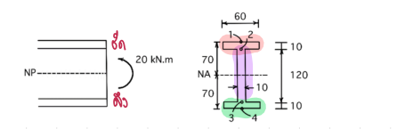
ส่วนเอวรับโมเมนต์ (บน+ล่าง): \(M_{\text{เอว}} = 55.2(40) \times 2 = 4.416\text{ kN}\cdot\text{m} \quad (\mathbf{22.08\%})\)
ปีกบนรับโมเมนต์ = ปีกล่างรับโมเมนต์: \(M_{\text{ปีก}} = \frac{20 - 4.416}{2} = 7.792\text{ kN}\cdot\text{m} \quad (\mathbf{38.96\% \text{ ต่อข้าง}})\)
ตย. 6.2คานตัว T ยื่น 1 m รับแรงกระจาย 20 kN/m (หน้า 8)
คานหน้าตัดตัว T ยาวรวม \(3\text{ m}\) (ช่วงระหว่างฐานรองรับ \(2\text{ m}\), ยื่นขวา \(1\text{ m}\)) รับน้ำหนักกระจาย \(20\text{ kN/m}\) ตลอดคาน จงหาขนาดมากที่สุดของหน่วยแรงดัดแบบดึงและแบบอัดที่เกิดขึ้นบนหน้าตัด
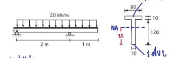
• SFD: ขึ้น \(+15\) $\to$ โดนกดลง \(20(2)=40\) เหลือ \(\mathbf{-25}\) (ตัด 0 ที่ \(x = 0.75\text{ m}\)) $\to$ ขึ้น \(45\) เป็น \(+20\) $\to$ ลง \(20\) จบที่ \(0\)
• BMD: จุด A (โมเมนต์บวกสูงสุด) \(M_A = +5.625\text{ kN}\cdot\text{m}\) | จุด B (โมเมนต์ลบสูงสุด) \(M_B = -10\text{ kN}\cdot\text{m}\)
ระดับ 1 (ขอบบน \(y=48\)): \(\sigma = \frac{5.625(48)}{3.1352} = 86.12\text{ MPa}\) (อัด)
ระดับ 2 (ขอบล่าง \(y=82\)): \(\sigma = \frac{5.625(82)}{3.1352} = 147.1\text{ MPa}\) (ดึง)
ที่จุดโมเมนต์ลบ B (\(M_B = -10\text{ kN}\cdot\text{m}\), บนดึง / ล่างอัด):
ระดับ 1 (ขอบบน \(y=48\)): \(\sigma = \frac{10(48)}{3.1352} = \mathbf{153.1\text{ MPa}}\) (ดึงสูงสุด!)
ระดับ 2 (ขอบล่าง \(y=82\)): \(\sigma = \frac{10(82)}{3.1352} = \mathbf{261.5\text{ MPa}}\) (อัดสูงสุด!)
ฝึกหัด Cจาก ตย. 6.1 เปลี่ยนความกว้างปีกบน-ล่างเป็น 100 mm (หน้า 13)
เปลี่ยนความกว้างของปีกบนและล่างจาก \(60\text{ mm}\) เป็น \(100\text{ mm}\) (ข้อมูลอื่นคงเดิม) จงหาหน่วยแรงดัดระดับ 1, ระดับ 2 และโมเมนต์ดัดที่รับโดยพื้นที่เอว
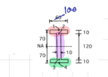
📄 ภาพสแกนลายมือต้นฉบับ (หน้า 8–9)


บทที่ 6 การโก่งตัวของคาน · หน้า 10–11
บทที่ 6.3–6.5: การโก่งตัวของคานด้วย Double Integration ครบทั้ง 3 แบบ
ตย. 6.3 (คานยื่น) · ตย. 6.4 (คานช่วงเดียวรับแรงกระจาย w) · ตย. 6.5 (คานช่วงเดียวรับแรงจุดเยื้องศูนย์ L/3)
โหมดฝึกเปิดอยู่: ซ่อนวิธีทำไว้ แตะแต่ละขั้นเพื่อดู (ลองเขียนเองก่อน) กดปุ่ม "ฝึก" อีกครั้งเพื่อปิด
ตย. 6.3คานยื่น ปลาย B ยึดแน่น แรง P กดปลาย A
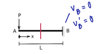
\[EI v'(x) = -\frac{1}{2}Px^2 + C_1, \quad EI v(x) = -\frac{1}{6}Px^3 + C_1 x + C_2\] แทน BC ที่ปลายยึดแน่น B (\(x = L\)): \(v'(L)=0 \implies C_1 = \frac{1}{2}PL^2\) และ \(v(L)=0 \implies C_2 = -\frac{1}{3}PL^3\)
ที่ปลายอิสระ A (\(x = 0\)): \(v_A' = \frac{PL^2}{2EI}\), \(v_A = -\frac{PL^3}{3EI}\)
ตย. 6.4คานช่วงเดียวรับแรงกระจายสม่ำเสมอ w
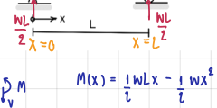
ความชันที่ปลาย: \(v'(0) = -\frac{wL^3}{24EI}\) | แอ่นตัวสูงสุดกลางคาน (\(x=L/2\)): \(v_{\max} = -\frac{5wL^4}{384EI}\)
ตย. 6.5คานช่วงเดียวรับแรงจุดเยื้องศูนย์ P ที่ระยะ L/3 (เฉลยจบครบทุกคำถาม)
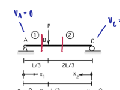
• ช่วง AB (วัด \(x_1\) จากซ้าย): \(M_1 = \frac{2}{3}Px_1 \implies EI v_1' = \frac{1}{3}Px_1^2 + C_1, \quad EI v_1 = \frac{1}{9}Px_1^3 + C_1 x_1 + C_2\)
• ช่วง CB (วัด \(x_2\) จากขวา): \(M_2 = \frac{1}{3}Px_2 \implies EI v_2' = \frac{1}{6}Px_2^2 + C_3, \quad EI v_2 = \frac{1}{18}Px_2^3 + C_3 x_2 + C_4\)
เงื่อนไขต่อเนื่องที่จุด B (\(x_1 = L/3\) และ \(x_2 = 2L/3\)):
1) \(v_1(L/3) = v_2(2L/3) \implies C_1 = \frac{1}{27}PL^2 + 2C_3\)
2) \(v_1'(L/3) = -v_2'(2L/3)\) (สวนทาง!) \(\implies C_1 + C_3 = -\frac{3}{27}PL^2\)
แก้ระบบสมการ: \(C_3 = -\frac{4}{81}PL^2, \quad C_1 = -\frac{5}{81}PL^2\)
• การโก่งตัวที่จุด B (\(x_1 = L/3\)): \(v_B = \frac{P}{EI}\left(\frac{1}{243} - \frac{5}{243}\right)L^3 = \mathbf{-\frac{4PL^3}{243EI}}\)
• การโก่งตัวสูงสุดของคาน (เกิดในช่วงยาว BC ที่ \(v_2' = 0\)):
\[\frac{1}{6}x_2^2 = \frac{4}{81}L^2 \implies x_2 = \frac{2\sqrt{6}}{9}L \approx 0.544L \implies v_{\max} = -\frac{16\sqrt{6}}{2187}\frac{PL^3}{EI} \approx \mathbf{-0.01792\frac{PL^3}{EI}}\]
📄 ภาพสแกนลายมือต้นฉบับ (หน้า 10–11)


บทที่ 6 หน้าตัดผสม · หน้า 12–13
บทที่ 6.6 & แบบฝึกหัด 6.6(A): หน้าตัดผสม 2 วัสดุ (ครบข้อ 1–6)
ตย. 6.6 ไม้-เหล็ก (แปลงทั้ง 2 วิธี) · และแบบฝึกหัด 6.6(A) เหล็ก-อะลูมิเนียม เฉลยครบจนถึงระยะตกปลาย A
โหมดฝึกเปิดอยู่: ซ่อนวิธีทำไว้ แตะแต่ละขั้นเพื่อดู (ลองเขียนเองก่อน) กดปุ่ม "ฝึก" อีกครั้งเพื่อปิด
ตย. 6.6หน้าตัดผสมไม้ (150×150, E=12) + เหล็ก (150×20, E=200), M = 20 kN·m
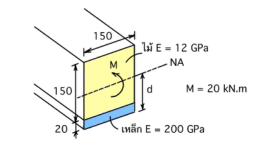
\[d' = \frac{150(150)(95) + 2500(20)(10)}{150(150) + 2500(20)} = 36.4\text{ mm}, \quad I' = 155,966,267\text{ mm}^4\] • ไม้จริง: \(\sigma_A = 17.13\text{ MPa}\text{ (อัด)}, \quad \sigma_B = 2.10\text{ MPa}\text{ (ดึง)}\)
• เหล็กจริง (คูณ \(\frac{200}{12}\) กลับ): \(\sigma_B = 35.04\text{ MPa}\text{ (ดึง)}, \quad \sigma_C = 77.78\text{ MPa}\text{ (ดึง)}\)
\(d' = 36.4\text{ mm}\) เท่าเดิม, \(I' = 9,357,976\text{ mm}^4\) $\to$ ได้หน่วยแรงจริงเท่ากันเป๊ะ!
ฝึกหัด 6.6(A)สลับวัสดุเป็น เหล็ก (150×150, E=200) + อะลูมิเนียม (20×150, E=70) (ครบข้อ 1–6)
สลับให้พื้นที่ \(150 \times 150\text{ mm}^2\) ทำจากเหล็ก (\(E = 200\text{ GPa}\)) และพื้นที่ \(20 \times 150\text{ mm}^2\) ทำจากอะลูมิเนียม (\(E = 70\text{ GPa}\)) ใช้โมดูลัสฐานคือเหล็ก (\(E' = 200\text{ GPa}\)) จงหาข้อ (1)–(5) และ **(6) หากใช้หน้าตัดนี้ทำเป็นคานใน ตย. 6.3 โดย P = 10 kN และ L = 4 m จะได้ระยะตกปลาย A เท่ากับกี่ mm**
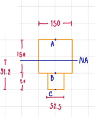
(1) ระดับ NA: \(d = \frac{52.5(20)(10) + 150^2(95)}{52.5(20) + 150^2} = \mathbf{91.2\text{ mm}}\)
(2) ค่าโมเมนต์ความเฉื่อย: \(I' = \mathbf{49,470,512\text{ mm}^4}\)
(3) เหล็กดึงสูงสุด (ที่ B): \(\mathbf{28.8\text{ MPa}}\) | (4) เหล็กอัดสูงสุด (ที่ A): \(\mathbf{31.9\text{ MPa}}\)
(5) อะลูมิเนียมดึงสูงสุด (ที่ C, คูณ 70/200): \(36.9 \times \frac{70}{200} = \mathbf{12.9\text{ MPa}}\)
\[v_A = \frac{(10,000\text{ N})(4,000\text{ mm})^3}{3 (200 \times 10^3\text{ MPa})(49,470,512\text{ mm}^4)} = \mathbf{21.56\text{ mm}}\]
📄 ภาพสแกนลายมือต้นฉบับ (หน้า 12–13)


บทที่ 7 แรงเฉือนตามขวาง · หน้า 14–15
บทที่ 7: แรงเฉือนในตัว I (ตย. 7.2) และรอยต่อทากาว (ตย. 7.3)
หน่วยแรงเฉือนกระโดด 6 เท่าที่รอยต่อปีก-เอว และหน่วยแรงเฉือนบนชั้นกาวรอยต่อ 1–2
โหมดฝึกเปิดอยู่: ซ่อนวิธีทำไว้ แตะแต่ละขั้นเพื่อดู (ลองเขียนเองก่อน) กดปุ่ม "ฝึก" อีกครั้งเพื่อปิด
ตย. 7.2หน้าตัดตัว I (60×140 mm) รับแรงเฉือน V = 120 kN
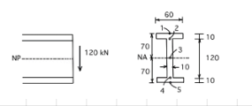
\(Q_2 = (60 \times 10)(65) = 39,000\text{ mm}^3\)
ฝั่งปีก (\(t=60\)): \(\tau_{2+} = \frac{120(39,000)}{6,520,000(60)}\times 1000 = \mathbf{11.96\text{ MPa}}\)
ฝั่งเอว (\(t=10\)): \(\tau_{2-} = \frac{120(39,000)}{6,520,000(10)}\times 1000 = \mathbf{71.78\text{ MPa}}\) (กระโดด 6 เท่า!)
\[\tau_3 = \frac{120(57,000)}{6,520,000(10)} \times 1000 = \mathbf{104.9\text{ MPa}} \quad (\text{เท่ากับ } \frac{104.9}{50} = \mathbf{2.1} \text{ เท่าของค่าเฉลี่ย})\] แรงเฉือนบนปีกบน+ล่าง \(= 2 \times \frac{1}{2}(11.96)(10)(60) = 7,176\text{ N} \approx 6\%\)
ดังนั้น พื้นที่ส่วนเอวรับแรงเฉือนถึง \(\mathbf{94\%}\)
ตย. 7.3หน้าตัดประกอบ 4 ชิ้นยึดด้วยกาว รับแรงเฉือน V = 100 kN
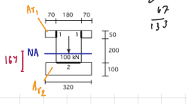
\[q_1 = \frac{100(553,000)}{1,026,676,000}(1000) = 53.86\text{ N/mm} \implies \bar{\tau}_1 = \frac{53.86}{50} = \mathbf{1.08\text{ MPa}}\] • รอยต่อ 2 (แผ่นล่าง 320×100, กว้างกาว 180 mm): \(Q_2 = (320 \times 100)(117) = 3,744,000\text{ mm}^3\)
\[q_2 = \frac{100(3,744,000)}{1,026,676,000}(1000) = 364.67\text{ N/mm} \implies \bar{\tau}_2 = \frac{364.67}{180} = \mathbf{2.03\text{ MPa}}\]
📄 ภาพสแกนลายมือต้นฉบับ (หน้า 14–15)
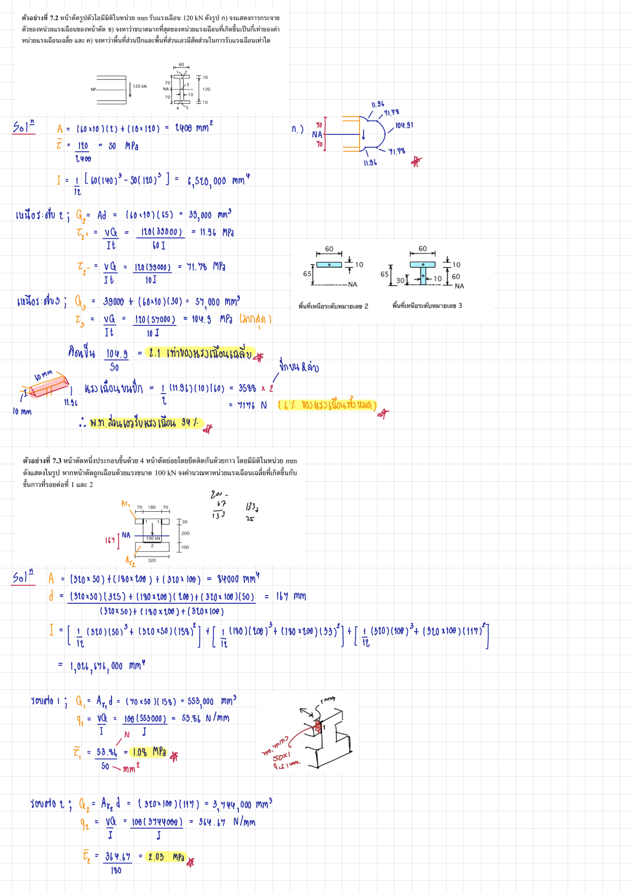
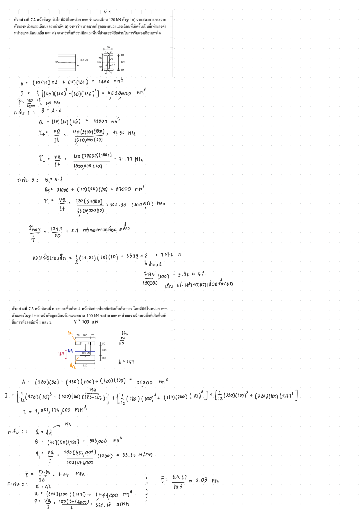
บทที่ 7 Shear Flow & ตะปู · หน้า 16
บทที่ 7.4: คานกล่องไม้ 4 แผ่นยึดด้วยตะปู 4 แนว (ตย. 7.4)
คำนวณระยะห่างตะปู \(s_1\) และ \(s_2\) ทั้งช่วง AB และ BC · ตอกยึด 2 ข้างสมมาตรต้องหาร 2I
โหมดฝึกเปิดอยู่: ซ่อนวิธีทำไว้ แตะแต่ละขั้นเพื่อดู (ลองเขียนเองก่อน) กดปุ่ม "ฝึก" อีกครั้งเพื่อปิด
ตย. 7.4คานประกอบ 4 แผ่นยึดด้วยตะปู (F_nail = 100 N)
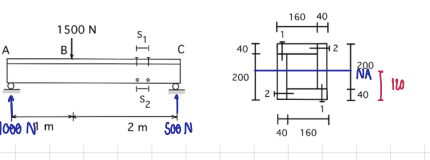
\[I = 2\left[\frac{1}{12}(40)(200)^3 + 40(200)(20)^2\right] + 2\left[\frac{1}{12}(160)(40)^3 + 160(40)(100)^2\right] = 189,440,000\text{ mm}^4\]
• ช่วง AB: \(q_1 = \frac{1000(800,000)}{2(189,440,000)} = 2.11\text{ N/mm} \implies s_1 = \frac{100}{2.11} = \mathbf{47.4\text{ mm}}\)
• ช่วง BC: \(q_1 = \frac{500(800,000)}{2(189,440,000)} = 1.06\text{ N/mm} \implies s_1 = \frac{100}{1.06} = \mathbf{94.3\text{ mm}}\)
• ช่วง AB: \(q_2 = \frac{1000(480,000)}{2(189,440,000)} = 1.27\text{ N/mm} \implies s_2 = \frac{100}{1.27} = \mathbf{78.7\text{ mm}}\)
• ช่วง BC: \(q_2 = \frac{500(480,000)}{2(189,440,000)} = 0.63\text{ N/mm} \implies s_2 = \frac{100}{0.63} = \mathbf{158.7\text{ mm}}\)
📄 ภาพสแกนลายมือต้นฉบับ (หน้า 16)

บทที่ 8 การโก่งเดาะของเสา · หน้า 17–21
บทที่ 8: เสาโก่งเดาะ (ตย. 8.1, 8.2, 8.3 และแบบฝึกหัด 8.2 ครบทุกข้อ)
เฉลยครบทั้ง 4 ข้อใหญ่ในบทที่ 8 · รวมถึงข้อ 8.3(ข) ที่ค้ำยันกึ่งกลางความสูงแนว x ที่ลายมือยังเขียนไม่จบ
โหมดฝึกเปิดอยู่: ซ่อนวิธีทำไว้ แตะแต่ละขั้นเพื่อดู (ลองเขียนเองก่อน) กดปุ่ม "ฝึก" อีกครั้งเพื่อปิด
ตย. 8.1เสาตัว H ยาว 3 m (A=218,700, Ix=666×10⁶, Iy=224×10⁶, หน้า 17–18)
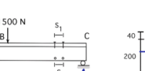
• ข) Fix-Fix (K=0.5): \((KL/r)_y = 46.88 < 88.86 \implies\) คราก \(\implies \sigma_c = 250\text{ MPa} \implies \mathbf{54.68\text{ MN}}\)
• ค) Fix-Pin (K=0.7): \((KL/r)_y = 65.62 < 88.86 \implies\) คราก \(\implies \sigma_c = 250\text{ MPa} \implies \mathbf{54.68\text{ MN}}\)
• ง) Fix-Free (K=2): \((KL/r)_y = 187.5 > 88.86 \implies\) เดาะแกน y \(\implies \sigma_c = 56.15\text{ MPa} \implies \mathbf{12.28\text{ MN}}\)
ตย. 8.2เสายาว 3 m ยึดรั้งปลายบนด้วยเคเบิลแนว x (E=180, σ_y=200, หน้า 19)
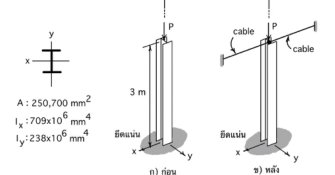
• ก) ก่อนยึดรั้ง (Fix-Free, K=2): \((KL/r)_y = 194.74\) (เดาะแกน y) \(\implies \sigma_c = 46.84\text{ MPa} \implies \mathbf{11.74\text{ MN}}\)
• ข) หลังยึดรั้งเคเบิลแนว x: เปลี่ยนแกน y เป็น Fix-Pin (\(K_y=0.7\)) \(\implies (KL/r)_y = 68.16\) ทำให้แกน x เดิม (\(112.82\)) กลับมาคุม! \(\implies \sigma_c = 139.57\text{ MPa} \implies \mathbf{34.99\text{ MN}}\)
ตย. 8.3เสายาว 8 m ยึดแน่น 2 ข้าง + ติดตั้งค้ำยันกึ่งกลางแนว x (เฉลยครบทั้ง ก และ ข!)
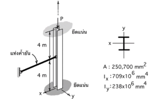
Fix-Fix (\(K=0.5\)): \((KL/r)_x = 75.21, \quad (KL/r)_y = 129.83\) (เดาะแกน y) \(\implies \sigma_c = 117.11\text{ MPa} \implies \mathbf{29.36\text{ MN}}\)
• รอบแกน x (ไม่ถูกค้ำยัน ยาว 8 m, \(K_x=0.5\)): \((KL/r)_x = \frac{0.5(8000)}{53.18} = 75.22\)
• รอบแกน y (ถูกค้ำยัน ยาว 4 m, \(K_y=0.7\)): \((KL/r)_y = \frac{0.7(4000)}{30.81} = 90.88\) (ยังมากกว่าแกน x และมากกว่า 83.96)
\[\sigma_c = \frac{\pi^2(200 \times 10^3)}{(90.88)^2} = 239.02\text{ MPa} \implies P_{cr} = 239.02 \times 250,700 = \mathbf{59.92\text{ MN}}\]
ฝึกหัด 8.2เสาเหล็กยาว 9 m หน้าตัดตัว I (200×10, เอว 150×10, หน้า 21)
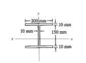
\(r_x = 71.91\text{ mm}, \quad r_y = 49.26\text{ mm}, \quad (KL/r)_c = 88.86\)
• 2) ล่าง Fix, บน Pin(y) & Free(x): \((KL/r)_y = 127.89, \quad (KL/r)_x = 250.31\) (แกน x เดาะ) \(\implies \sigma_c = 31.50\text{ MPa} \implies \mathbf{P_{cr} = 173.25\text{ kN}}\)
📄 ภาพสแกนลายมือต้นฉบับ (หน้า 17–21)


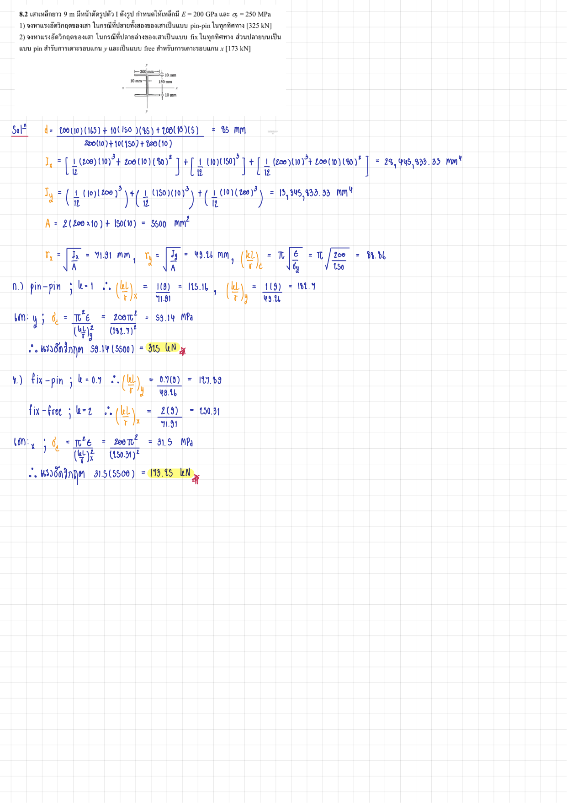
หมวดกู้ชีพข้อสอบปลายภาค · กลศาสตร์ของแข็ง มหาวิทยาลัยธรรมศาสตร์
🔥 รวมเก็งข้อสอบจริง & เทคนิคแก้โจทย์พลิกแพลง 7 รูปแบบ
วิเคราะห์โจทย์ที่อาจารย์ชอบใช้ตัดเกรด A/B/C/D/F · เทคนิคตั้งสมการแรก · วิธีโกยคะแนนสูงสุดเพื่อการันตีรอด F
เรียบเรียงและกลั่นกรองจากข้อสอบเก่าย้อนหลังและเกณฑ์การตรวจข้อสอบภาควิชาวิศวกรรมโยธา
โหมดฝึกเปิดอยู่: ซ่อนวิธีทำไว้ แตะแต่ละขั้นเพื่อดู (ลองเขียนเองก่อน) กดปุ่ม "ฝึก" อีกครั้งเพื่อปิด
ยุทธศาสตร์ลำดับการเลือกทำข้อสอบในห้องสอบจริง (Exam Order of Attack)
อย่าทำข้อสอบเรียงจากหน้า 1 ไปหน้าสุดท้ายเด็ดขาด! ให้แบ่งการทำข้อสอบเป็น 4 ลำดับเพื่อล็อคคะแนนผ่านใน 60 นาทีแรก:
| ลำดับ | กลุ่มข้อสอบ | หัวข้อเรื่อง | เวลาที่ควรใช้ | เป้าหมายคะแนน |
|---|---|---|---|---|
| ขั้นที่ 1 | ของตายเก็บแต้มชัวร์ | ข้อ 4 (เพลาตัน vs กลวง), ข้อ 9 (Shear Flow & ตะปู), ข้อ 1 (เพลาขั้น) | 30–35 นาที | ต้องได้เต็ม 100% (เป็นฐานคะแนนรอด F) |
| ขั้นที่ 2 | ข้อสูตรตรงไปตรงมา | ข้อ 5 (ดัดหน้าตัดไม่สมมาตร), ข้อ 8 (แรงเฉือน \(\tau\) กระโดด), ข้อ 7 (หน้าตัดผสม) | 45–50 นาที | เก็บแต้มอย่างน้อย 85% (ระวังเครื่องหมาย ดึง/อัด และการคูณ n) |
| ขั้นที่ 3 | ข้อคำนวณยาว | ข้อ 2 (บิดอินดีเทอร์มิเนต), ข้อ 10 (เสาโก่งเดาะ 2 แกน) | 40–45 นาที | ตั้งสมการ Compatibility ให้ถูก จะได้คะแนนวิธีทำแล้ว 75% |
| ขั้นที่ 4 | ข้อพลิกแพลง/พิสูจน์ | ข้อ 6 (คานแอ่นตัว) หรือข้อสอบพลิกแพลง Combined Loading / Biaxial | 35–40 นาที | เขียนสมการหลัก แตกแรง และแสดงวิธีทำให้มากที่สุด |
| ขั้นที่ 5 | ตรวจทานหน่วย 10 นาทีสุดท้าย | เช็กหน่วย \(\text{N}\cdot\text{mm}\), \(\text{MPa}\), ปัดเศษตะปูลง, เช็ก 2 แกนเสา | 10 นาทีสุดท้าย | ป้องกันคะแนนตกหล่นจุดละ 1–2 แต้ม |
รูปแบบปกติในชีท (ข้อ 2)
เพลายึดแน่นกับผนังทั้งสองข้างตั้งแต่เริ่มต้น ทำให้มุมบิดรวมจากปลายถึงปลายเท่ากับศูนย์เสมอ:
\[\phi_{A/B} = \sum \frac{T_i L_i}{GJ} = 0\]การพลิกแพลงของอาจารย์ในห้องสอบ
ปลายด้านหนึ่ง (เช่น จุด B) มีช่องว่างเริ่มต้น (Gap \(\Delta \phi\)) เพลาต้องบิดไปจนแตะผนังก่อน ผนังจึงจะเริ่มออกแรงต้านทาน \(T_B\)!
⚡ เทคนิคการทำโจทย์ & สมการแม่บท:
สเต็ป 1: สมมติให้ปลาย B เป็นอิสระ (Free End, \(T_B = 0\)) แล้วคำนวณมุมบิดที่ปลาย B จากแรงบิดภายนอก \(T_0\):
\[\phi_B^{\text{free}} = \frac{T_0 L_{AC}}{GJ}\]สเต็ป 2 (เช็กเงื่อนไข):
- ถ้า \(\phi_B^{\text{free}} \le \Delta \phi\): เพลาบิดไม่ถึงผนัง! ปลาย B เป็นอิสระจริง \(T_B = 0\) และ \(T_A = T_0\) (กลายเป็นโจทย์ดีเทอร์มิเนตธรรมดา)
- ถ้า \(\phi_B^{\text{free}} > \Delta \phi\): เพลาชนผนังและเกิดแรงปฏิกิริยา \(T_B\) ให้ตั้งสมการ Compatibility ใหม่เป็น: \[\phi_{A/B} = \Delta \phi \implies \frac{T_{AC} L_{AC}}{GJ} + \frac{T_{CB} L_{CB}}{GJ} = \Delta \phi\]
จุดระวัง: แปลงมุมช่องว่าง \(\Delta \phi\) จากองศาเป็นเรเดียนเสมอ: \(\text{rad} = \text{deg} \times \frac{\pi}{180}\)
รูปแบบปกติในชีท (ข้อ 5)
โมเมนต์ดัดกระทำในระนาบแกนหลักแกนเดียว (รอบแกน \(z\)) แกนสะเทิน NA ขนานกับแกน \(z\) เสมอ:
\[\sigma = -\frac{M y}{I}\]การพลิกแพลงของอาจารย์ในห้องสอบ
แรงกระทำทำมุมเอียง \(\theta\) กับแกนหลัก (เช่น คานแปหลังคาวางเอียง หรือแรงเฉียง) ทำให้เกิดโมเมนต์ดัดทั้ง 2 แกน (\(M_z\) และ \(M_y\))
⚡ เทคนิคการทำโจทย์ & สมการแม่บท:
สเต็ป 1: แตกโมเมนต์เข้าสู่แกนหลักของหน้าตัด:
\[M_z = M \cos \theta, \quad M_y = M \sin \theta\]สเต็ป 2: ตั้งสมการความเค้นรวม (Superposition of Bending):
\[\sigma_x = -\frac{M_z y}{I_z} + \frac{M_y z}{I_y}\]สเต็ป 3: หามุมเอียงของแกนสะเทิน (Neutral Axis Angle \(\alpha\)): ที่แกน NA ความเค้น \(\sigma_x = 0\):
\[0 = -\frac{M_z y}{I_z} + \frac{M_y z}{I_y} \implies \frac{y}{z} = \frac{M_y I_z}{M_z I_y} = \left(\frac{I_z}{I_y}\right) \tan \theta\] \[\tan \alpha = \frac{I_z}{I_y} \tan \theta\]⚠️ กับดักที่คน 90% ตกม้าตาย: แกนสะเทิน NA **จะไม่ตั้งฉากกับแนวโมเมนต์** ถ้า \(I_z \ne I_y\)! แกน NA จะเอียงเบนเข้าหาแกนอ่อนเสมอ
รูปแบบปกติในชีท (ข้อ 7)
คานไม้เสริมแผ่นเหล็กที่ด้านล่างแผ่นเดียว แปลงหน้าตัดเหล็กแผ่นล่าง \(b' = nb\) หาเซนทรอยด์ใหม่
การพลิกแพลงของอาจารย์ในห้องสอบ
1. เสริมแผ่นเหล็กทั้งบนและล่างเท่ากัน (หน้าตัดสมมาตร แกน NA อยู่กึ่งกลางเดิม!)
2. คานคอนกรีตเสริมเหล็ก (คอนกรีตรับแรงดึงไม่ได้ ต้องตัดทิ้ง คิดเฉพาะคอนกรีตส่วนรับแรงอัด)
⚡ เทคนิคทางลัดกรณีแผ่นเหล็กประกบคู่ (Top & Bottom Sandwich):
ถ้าแผ่นเหล็กบน-ล่างมีขนาดเท่ากัน หน้าตัดยังคง สมมาตร แกนสะเทิน NA อยู่ที่กึ่งกลางความสูงเดิมทันที ไม่ต้องเสียเวลาคำนวณ \(\bar{y}\)!
\[I_T = \frac{b_w h_w^3}{12} + 2 \left[ \frac{b_s' t_s^3}{12} + (b_s' t_s) d^2 \right] \quad (b_s' = n b_s)\]⚡ เทคนิคกรณีคอนกรีตเสริมเหล็ก (Cracked RC Section):
สมดุล First Moment ของพื้นที่แปลงรอบแกนสะเทิน NA (ระยะลึก \(kd\)):
\[b \cdot \frac{(kd)^2}{2} = n A_s (d - kd)\]แก้สมการกำลังสองหาค่า \(kd\) แล้วคำนวณ \(I_{\text{cr}} = \frac{b(kd)^3}{3} + n A_s (d - kd)^2\) จากนั้น \(\sigma_c = \frac{M kd}{I_{\text{cr}}}\) และ \(\sigma_s = n \frac{M(d-kd)}{I_{\text{cr}}}\)
รูปแบบปกติในชีท (ข้อ 8 & 9)
คานปีกกว้างเอวเดี่ยว ตะปูยึดแผ่นปีกระนาบเดียว แรงเฉือนวิ่งผ่านเอวความหนา \(t = t_w\)
การพลิกแพลงของอาจารย์ในห้องสอบ
หน้าตัดเป็นกล่องกลวง (Box Girder) มีเอว 2 ข้าง หรือแผ่นไม้ประกบยึดด้วย กาว (Glue) แทนตะปู
⚡ เทคนิคการคิดคานกล่อง 2 เอว:
เมื่อตัดระนาบผ่านเอวของคานกล่อง แรงเฉือนจะแบ่งไหลลงเอวซ้ายและขวาเท่ากัน ดังนั้นความหนาต้านแรงเฉือนคือ \(t = 2 t_w\):
\[\tau_{\text{web}} = \frac{V Q}{I (2 t_w)}\]และแรงเฉือนไหลที่รอยต่อตะปูแต่ละข้างคือ: \(q_{\text{one side}} = \frac{V Q_{\text{flange}}}{2 I}\)
⚡ เทคนิคกรณีรอยต่อทากาว (Glued Joint):
กาวรับแรงเฉือนแบบต่อเนื่องบนพื้นที่ผิวสัมผัสกว้าง \(b_{\text{glue}}\):
\[\tau_{\text{glue}} = \frac{q}{b_{\text{glue}}} \le \tau_{\text{allow, glue}} \implies b_{\text{glue}} \ge \frac{q}{\tau_{\text{allow, glue}}}\]รูปแบบปกติในชีท (ข้อ 6)
คานยื่นดีเทอร์มิเนต อินทิเกรตสองชั้น \(EI v'' = M(x)\) แทนค่า \(C_1=0, C_2=0\)
การพลิกแพลงของอาจารย์ในห้องสอบ
คานยื่นแต่มี Roller หนุนที่ปลาย B (Propped Cantilever) รับแรงกระจาย \(w\) เป็นโครงสร้างอินดีเทอร์มิเนต!
⚡ ทางลัดไม่ต้องอินทิเกรต (ใช้วิธี Superposition จบใน 3 บรรทัด!):
สเต็ป 1: ปลด Roller ที่ B ออก ให้กลายเป็นแรงปฏิกิริยาส่วนเกิน \(B_y \uparrow\)
สเต็ป 2: ตั้งสมการการแอ่นตัวที่จุด B ต้องเป็นศูนย์ (\(v_B = 0\)):
\[v_B = v_{B, w} + v_{B, R} = 0\] \[-\frac{w L^4}{8 E I} + \frac{B_y L^3}{3 E I} = 0 \implies B_y = \frac{3}{8} w L\]สเต็ป 3: หาแรงปฏิกิริยาและโมเมนต์ที่ปลายยึดแน่น A ทันที:
\[A_y = w L - B_y = \frac{5}{8} w L\] \[M_A = -\frac{w L^2}{2} + B_y L = -\frac{w L^2}{2} + \left(\frac{3}{8}wL\right)L = -\frac{1}{8} w L^2\]จำผลลัพธ์นี้ไปเลย: สำหรับ Propped Cantilever รับแรง \(w\) ตลอดช่วง \(B_y = \frac{3}{8}wL\) และ \(M_A = -\frac{1}{8}wL^2\)
รูปแบบปกติในชีท
แยกคำนวณการบิด \(\tau = Tr/J\), การดัด \(\sigma = My/I\), หรือแรงตามแนวแกน \(\sigma = P/A\) ทีละเรื่อง
การพลิกแพลงของอาจารย์ในห้องสอบ
รวมทุกแรงเข้าด้วยกันในเพลาเดียว: รับทั้งแรงกด \(P\), โมเมนต์ดัด \(M\), และแรงบิด \(T\) พร้อมกัน แล้วสั่งให้หาวงกลมมอร์และเช็กการวิบัติ!
⚡ ลำดับขั้นตอนการแก้โจทย์แบบสมบูรณ์:
สเต็ป 1: รวมความเค้นตั้งฉาก (Normal Stress \(\sigma_x\)):
\[\sigma_x = -\frac{P}{A} - \frac{M y}{I} \quad (\text{แรงกดเป็นลบ, โมเมนต์ดัดดูฝั่งดึงหรืออัด})\]สเต็ป 2: คำนวณความเค้นเฉือนจากแรงบิด (Torsional Shear \(\tau_{xy}\)):
\[\tau_{xy} = \frac{T r}{J}\]สเต็ป 3: สร้างวงกลมมอร์ (Mohr's Circle) หา Principal Stresses:
\[\sigma_{\text{avg}} = \frac{\sigma_x}{2}, \quad R = \sqrt{\left(\frac{\sigma_x}{2}\right)^2 + \tau_{xy}^2}\] \[\sigma_1 = \sigma_{\text{avg}} + R, \quad \sigma_2 = \sigma_{\text{avg}} - R, \quad \tau_{\max} = R\]สเต็ป 4: ตรวจสอบเกณฑ์การวิบัติ (Yield Criteria):
- ทฤษฎี Tresca (Max Shear Stress): \(\sigma_{\text{Tresca}} = \sigma_1 - \sigma_2 = 2R = \sqrt{\sigma_x^2 + 4\tau_{xy}^2} \le \sigma_y\)
- ทฤษฎี von Mises (Distortion Energy): \(\sigma_{\text{vm}} = \sqrt{\sigma_1^2 - \sigma_1\sigma_2 + \sigma_2^2} = \sqrt{\sigma_x^2 + 3\tau_{xy}^2} \le \sigma_y\)
รูปแบบปกติในชีท (ข้อ 10)
จุดรองรับเหมือนกันทั้งสองแกน (เช่น Pin-Pin ทั้งแกน x และ y) เสาโก่งเดาะรอบแกนอ่อน y เสมอ
การพลิกแพลงของอาจารย์ในห้องสอบ
จุดรองรับ 2 ระนาบ ไม่เหมือนกัน เช่น ระนาบ \(x-z\) เป็น Fix-Fix (\(K_x = 0.5\)) แต่ระนาบ \(y-z\) เป็น Pin-Pin (\(K_y = 1.0\)) และมีค้ำยันข้าง!
⚡ วิธีวิเคราะห์เปรียบเทียบ 2 แกนทีละสเต็ป:
สเต็ป 1: คำนวณอัตราส่วนความชะลูดแยกทีละแกนอย่างเด็ดขาด:
\[\lambda_x = \frac{K_x L_x}{r_x}, \quad \lambda_y = \frac{K_y L_y}{r_y}\]สเต็ป 2: เปรียบเทียบหาแกนวิกฤต:
แกนที่มีค่า \(\lambda = \frac{KL}{r}\) สูงกว่า จะเป็นแกนที่ควบคุมการโก่งเดาะเสมอ (Critical Axis)!
สเต็ป 3: เช็กขีดจำกัดการคราก (Yielding vs Buckling):
- ถ้า \(\lambda_{\max} < \left(\frac{KL}{r}\right)_c = \sqrt{\frac{2\pi^2 E}{\sigma_y}}\): เสาครากก่อนโก่งเดาะ \(P_{\text{fail}} = \sigma_y \cdot A\)
- ถ้า \(\lambda_{\max} \ge \left(\frac{KL}{r}\right)_c\): เสาเกิด Euler Buckling \(P_{cr} = \frac{\pi^2 E A}{\lambda_{\max}^2} = \frac{\pi^2 E I_{\text{gov}}}{(KL)_{\text{gov}}^2}\)
✅ The Zero-F Checklist: 10 จุดตรวจทานก่อนวางปากกาในห้องสอบ
- หน่วยโมเมนต์ & แรงบิด: แปลง \(\text{N}\cdot\text{m} \to \text{N}\cdot\text{mm}\) (คูณ \(10^3\)) หรือ \(\text{kN}\cdot\text{m} \to \text{N}\cdot\text{mm}\) (คูณ \(10^6\)) ก่อนแทนค่าหรือยัง?
- หน่วยโมดูลัส: แปลง \(\text{GPa} \to \text{MPa} = \text{N/mm}^2\) (คูณ \(10^3\)) แล้วหรือยัง?
- เพลากลวง: คำนวณ \(\tau_{\min}\) ที่ผิวในจาก \(c_i\) ใช่ไหม (ห้ามตอบ 0 เด็ดขาด)?
- หน้าตัดผสม: ขยายเฉพาะความกว้าง \(b' = nb\) ไม่ได้ขยายความสูง \(h\) ใช่ไหม?
- หน้าตัดผสม: เมื่อคำนวณหน่วยแรงในเหล็ก ได้ คูณ \(n\) กลับ เข้าไปในสมการหรือยัง (\(\sigma_s = n My/I_T\))?
- เครื่องหมายการดัด: โมเมนต์บวกเขียนกำกับชัดเจนหรือยังว่า ผิวบนเป็น (อัด) ผิวล่างเป็น (ดึง)?
- ระยะห่างตะปู (s): คำนวณได้ทศนิยม ได้ ปัดเศษลง (Round Down) เสมอ เพื่อความปลอดภัยใช่ไหม?
- แรงเฉือนคานกล่อง: ระนาบตัดผ่านเอว 2 ข้าง ได้ใช้ \(t = 2t_w\) แล้วหรือยัง?
- เสาโก่งเดาะ: คำนวณตรวจสอบครบทั้งแกน \(x\) และแกน \(y\) แล้วเลือกค่าความชะลูดสูงสุดใช่ไหม?
- วงกลมมอร์: รัศมี \(R\) คือค่า \(\tau_{\max}\) และอย่าลืมใส่หน่วย \(\text{MPa}\) ให้ครบทุกคำตอบ!
จำลองข้อสอบจริงปลายภาค · ภาควิชาวิศวกรรมโยธา มหาวิทยาลัยธรรมศาสตร์
🎯 ชุดข้อสอบเก็งปลายภาคจริง 5 ข้อใหญ่ (Final Mock Exam)
โจทย์เต็ม · มิติรูปทรงจริง · เฉลยละเอียด 4 สเต็ปบรรทัดต่อบรรทัด · ระบบตรวจคำตอบ
คัดเลือกและจำลองข้อสอบที่มีโอกาสออกสูงสุดในห้องสอบจริง · จัดทำโดย ธนภรณ์ นพรัตน์
โหมดฝึกเปิดอยู่: ซ่อนวิธีทำไว้ แตะแต่ละขั้นเพื่อดู (ลองเขียนเองก่อน) กดปุ่ม "ฝึก" อีกครั้งเพื่อปิด
ข้อสอบเก็ง 1การบิดเพลาขั้นส่งกำลังผ่านเฟือง & ตรวจสอบหน่วยแรง (20 คะแนน)
เพลาเหล็กกลมตันปลายด้านหนึ่งยึดแน่นที่จุด A (Fixed at A) ทำจากวัสดุที่มีโมดูลัสเฉือน \(G = 80\text{ GPa}\) และหน่วยแรงเฉือนที่ยอมให้ \(\tau_{\text{allow}} = 60\text{ MPa}\) เพลาประกอบด้วย 2 ช่วง:
- ช่วง \(AB\): เส้นผ่านศูนย์กลาง \(d_1 = 40\text{ mm}\) (รัศมี \(c_1 = 20\text{ mm}\)), ความยาว \(L_1 = 800\text{ mm}\)
- ช่วง \(BC\): เส้นผ่านศูนย์กลาง \(d_2 = 60\text{ mm}\) (รัศมี \(c_2 = 30\text{ mm}\)), ความยาว \(L_2 = 1200\text{ mm}\)
ที่ปลาย C ติดตั้งเฟืองวงกลมรัศมี \(r_C = 150\text{ mm}\) ขบกับเฟือง D รัศมี \(r_D = 300\text{ mm}\) ส่งแรงขบฟันเฟืองในแนวสัมผัส \(F = 6\text{ kN}\) และที่จุด B มีแรงบิดภายนอกกระทำ \(T_B = 1.2\text{ kN}\cdot\text{m}\) ในทิศทางเดียวกับแรงบิดจากเฟือง จงหา:
1. แรงบิดภายในในแต่ละช่วง \(T_{AB}\) และ \(T_{BC}\)
2. ความเค้นเฉือนสูงสุดในแต่ละช่วง พร้อมตรวจสอบว่าปลอดภัยหรือไม่
3. มุมบิดสะสมที่ปลาย C สัมพัทธ์กับปลาย A (\(\phi_{C/A}\)) ในหน่วยเรเดียนและองศา
4. มุมการหมุนของเฟือง D (\(\phi_D\))
เฉลยละเอียดข้อ 1 ทีละขั้นตอน (Step-by-Step Solution)
\(d_2 = 60\text{ mm} \implies c_2 = 30\text{ mm}, \quad L_2 = 1200\text{ mm}\)
\(G = 80\text{ GPa} = 80 \times 10^3\text{ MPa}, \quad \tau_{\text{allow}} = 60\text{ MPa}\)
\(r_C = 150\text{ mm}, \quad r_D = 300\text{ mm}, \quad F = 6\text{ kN} = 6,000\text{ N}, \quad T_B = 1.2\text{ kN}\cdot\text{m} = 1.2 \times 10^6\text{ N}\cdot\text{mm}\)
\[T_C = F \cdot r_C = (6,000\text{ N})(150\text{ mm}) = 900,000\text{ N}\cdot\text{mm} = 0.9\text{ kN}\cdot\text{m}\] ตัดช่วง BC: \(T_{BC} = T_C = 900 \times 10^3\text{ N}\cdot\text{mm} = 0.9\text{ kN}\cdot\text{m}\)
ตัดช่วง AB: มี \(T_B\) เสริมทิศทางเดียวกัน:
\[T_{AB} = T_{BC} + T_B = 900 \times 10^3 + 1,200 \times 10^3 = 2,100 \times 10^3\text{ N}\cdot\text{mm} = 2.1\text{ kN}\cdot\text{m}\]
\[\phi_D = \phi_C \left(\frac{r_C}{r_D}\right) = (0.09417\text{ rad}) \left(\frac{150}{300}\right) = 0.04708\text{ rad} \approx 2.70^\circ\]
ข้อสอบเก็ง 2การดัดสองแกนในคานหน้าตัดสี่เหลี่ยม & มุมเอียงแกนสะเทิน (20 คะแนน)
คานช่วงเดี่ยว (Simply Supported Beam) ความยาวช่วง \(L = 4.0\text{ m}\) รับแรงกระทำแบบจุดที่กึ่งกลางคาน \(P = 5.0\text{ kN}\) โดยแนวแรงทำมุมเอียง \(\theta = 30^\circ\) กับแนวดิ่ง หน้าตัดคานเป็นรูปสี่เหลี่ยมผืนผ้ากว้าง \(b = 100\text{ mm}\) สูง \(h = 200\text{ mm}\) จงหา:
1. โมเมนต์ดัดสูงสุดรอบแกนหลัก \(M_z\) และ \(M_y\)
2. Moment of Inertia \(I_z\) และ \(I_y\)
3. มุมเอียงของแกนสะเทิน (Neutral Axis Angle \(\alpha\)) เทียบกับแกน \(z\)
4. หน่วยแรงดัดที่จุดมุมทั้งสี่ \(A, B, C, D\) พร้อมระบุจุดวิกฤตที่รับแรงดึงและแรงอัดสูงสุด
เฉลยละเอียดข้อ 2 ทีละขั้นตอน (Step-by-Step Solution)
\(b = 100\text{ mm}, \quad h = 200\text{ mm}\)
แตกเข้าแกนหลัก \(z\) (แนวนอน) และ \(y\) (แนวดิ่ง):
\[M_z = M \cos 30^\circ = (5 \times 10^6)(0.8660) = 4,330,127\text{ N}\cdot\text{mm}\] \[M_y = M \sin 30^\circ = (5 \times 10^6)(0.5000) = 2,500,000\text{ N}\cdot\text{mm}\]
- มุม B (บน-ซ้าย: y = +100, z = -50):
\[\sigma_B = -\frac{(4.330 \times 10^6)(100)}{66.67 \times 10^6} + \frac{(2.500 \times 10^6)(-50)}{16.67 \times 10^6} = -6.50 - 7.50 = -14.00\text{ MPa (อัดสูงสุด!)}\] - มุม D (ล่าง-ขวา: y = -100, z = +50):
\[\sigma_D = -\frac{(4.330 \times 10^6)(-100)}{66.67 \times 10^6} + \frac{(2.500 \times 10^6)(+50)}{16.67 \times 10^6} = +6.50 + 7.50 = +14.00\text{ MPa (ดึงสูงสุด!)}\] - มุม A (บน-ขวา): \(\sigma_A = -6.50 + 7.50 = +1.00\text{ MPa (ดึง)}\)
- มุม C (ล่าง-ซ้าย): \(\sigma_C = +6.50 - 7.50 = -1.00\text{ MPa (อัด)}\)
ข้อสอบเก็ง 3คานประกอบไม้ประกบเหล็กบน-ล่าง & ระยะห่างตะปูยึด (20 คะแนน)
คานประกอบสมมาตร แกนกลางทำด้วยไม้ขนาดกว้าง \(b_w = 120\text{ mm}\) สูง \(h_w = 200\text{ mm}\) (\(E_w = 10\text{ GPa}\)) ประกบติดด้วยแผ่นเหล็กทั้งขอบบนและขอบล่าง ขนาดกว้าง \(b_s = 120\text{ mm}\) หนา \(t_s = 10\text{ mm}\) (\(E_s = 200\text{ GPa}\)) คานรับโมเมนต์ดัดบวก \(M = 35\text{ kN}\cdot\text{m}\) และแรงเฉือน \(V = 24\text{ kN}\) ยึดแผ่นเหล็กกับไม้ด้วยตะปู 2 แถว (\(m = 2\)) ตะปู 1 ตัวรับแรงเฉือนได้ \(F_{\text{nail}} = 1.5\text{ kN}\) จงหา:
1. อัตราส่วนโมดูลัส \(n\) และ Moment of Inertia ของหน้าตัดแปลง \(I_T\)
2. หน่วยแรงดัดสูงสุดในเนื้อไม้ \(\sigma_{w,\max}\) และในเนื้อเหล็ก \(\sigma_{s,\max}\)
3. ค่า First Moment of Area \(Q\) ที่ระนาบรอยต่อระหว่างเหล็กกับไม้
4. แรงเฉือนไหล \(q\) และกำหนดระยะห่างตะปู \(s\) ที่ปลอดภัยตามหลักวิศวกรรม
เฉลยละเอียดข้อ 3 ทีละขั้นตอน (Step-by-Step Solution)
เหล็ก: \(b_s = 120\text{ mm}, \quad t_s = 10\text{ mm}, \quad E_s = 200\text{ GPa}\)
\(M = 35 \times 10^6\text{ N}\cdot\text{mm}, \quad V = 24,000\text{ N}, \quad m = 2, \quad F_{\text{nail}} = 1,500\text{ N}\)
เนื่องจากหน้าตัดสมมาตรบน-ล่าง แกนสะเทิน NA อยู่ที่กึ่งกลางความสูงเดิม (ระยะห่างจาก NA ถึงเซนทรอยด์แผ่นเหล็ก \(d_s = 100 + 5 = 105\text{ mm}\)):
\[I_w = \frac{b_w h_w^3}{12} = \frac{(120)(200)^3}{12} = 80 \times 10^6\text{ mm}^4\] \[I_{s,\text{one}} = \frac{b_s' t_s^3}{12} + (b_s' t_s) d_s^2 = \frac{(2400)(10)^3}{12} + (2400 \times 10)(105)^2 = 200,000 + 264,600,000 = 264.8 \times 10^6\text{ mm}^4\] \[I_T = I_w + 2 I_{s,\text{one}} = 80 \times 10^6 + 2(264.8 \times 10^6) = 609.6 \times 10^6\text{ mm}^4\]
\[\sigma_{w,\max} = \frac{M y_w}{I_T} = \frac{(35 \times 10^6)(100)}{609.6 \times 10^6} = 5.74\text{ MPa}\] ในเนื้อเหล็ก (สูงสุดที่ขอบนอกสุด \(y = 110\text{ mm}\)) **ต้องคูณ n กลับ:**
\[\sigma_{s,\max} = n \left(\frac{M y_s}{I_T}\right) = 20 \times \frac{(35 \times 10^6)(110)}{609.6 \times 10^6} = 126.31\text{ MPa}\]
ข้อสอบเก็ง 4ความเค้นรวม วงกลมมอร์ และการตรวจสอบการวิบัติของเพลา (20 คะแนน)
เพลากลมตันขนาดเส้นผ่านศูนย์กลาง \(d = 50\text{ mm}\) (\(c = 25\text{ mm}\)) ทำจากเหล็กกล้าโครงสร้างมีกำลังคราก \(\sigma_y = 300\text{ MPa}\) รับแรงกระทำพร้อมกันที่หน้าตัดวิกฤต ดังนี้:
- แรงกดตามแนวแกน (Axial Compression) \(P = 40\text{ kN}\)
- โมเมนต์ดัด (Bending Moment) \(M = 1.5\text{ kN}\cdot\text{m}\)
- แรงบิด (Torsional Moment) \(T = 2.0\text{ kN}\cdot\text{m}\)
จงหา:
1. ความเค้นตั้งฉากรวม \(\sigma_x\) และความเค้นเฉือน \(\tau_{xy}\) ที่ผิวบนสุดของเพลา (จุด A)
2. วงกลมมอร์ คำนวณความเค้นหลัก \(\sigma_1, \sigma_2\) และความเค้นเฉือนสูงสุดในระนาบ \(\tau_{\max}\)
3. ตรวจสอบความปลอดภัยด้วยทฤษฎี Tresca (Max Shear Stress) และทฤษฎี von Mises (Distortion Energy) พร้อมหาค่า Factor of Safety (\(FS\))
เฉลยละเอียดข้อ 4 ทีละขั้นตอน (Step-by-Step Solution)
\(P = 40,000\text{ N} \text{ (กด)}, \quad M = 1.5 \times 10^6\text{ N}\cdot\text{mm}, \quad T = 2.0 \times 10^6\text{ N}\cdot\text{mm}\)
\[\sigma_{\text{axial}} = -\frac{P}{A} = -\frac{40,000}{1,963.50} = -20.37\text{ MPa}\] \[\sigma_{\text{bend}} = -\frac{M c}{I} = -\frac{(1.5 \times 10^6)(25)}{306,796.16} = -122.23\text{ MPa}\] \[\sigma_x = -20.37 - 122.23 = -142.60\text{ MPa}\] ความเค้นเฉือนจากแรงบิด:
\[\tau_{xy} = \frac{T c}{J} = \frac{(2.0 \times 10^6)(25)}{613,592.32} = 81.49\text{ MPa}\]
รัศมีวงกลมมอร์ (\(R = \tau_{\max}\)):
\[R = \sqrt{\left(\frac{\sigma_x}{2}\right)^2 + \tau_{xy}^2} = \sqrt{(-71.30)^2 + (81.49)^2} = \sqrt{5,083.69 + 6,640.62} = 108.28\text{ MPa}\] ความเค้นหลักทั้งสองค่า:
\[\sigma_1 = \sigma_{\text{avg}} + R = -71.30 + 108.28 = +36.98\text{ MPa (ดึง)}\] \[\sigma_2 = \sigma_{\text{avg}} - R = -71.30 - 108.28 = -179.58\text{ MPa (อัด)}\]
\[\sigma_{\text{Tresca}} = \sigma_1 - \sigma_2 = 36.98 - (-179.58) = 216.56\text{ MPa} \le 300\text{ MPa} \implies \text{ปลอดภัย}\] \[FS_{\text{Tresca}} = \frac{\sigma_y}{\sigma_{\text{Tresca}}} = \frac{300}{216.56} = 1.39\] 2. ทฤษฎี von Mises (Maximum Distortion Energy Theory):
\[\sigma_{\text{vm}} = \sqrt{\sigma_x^2 + 3\tau_{xy}^2} = \sqrt{(-142.60)^2 + 3(81.49)^2} = \sqrt{20,334.76 + 19,921.86} = 200.64\text{ MPa}\] \[FS_{\text{vm}} = \frac{\sigma_y}{\sigma_{\text{vm}}} = \frac{300}{200.64} = 1.50\]
ข้อสอบเก็ง 5เสาเหล็กโครงสร้างโก่งเดาะในระนาบ 3 มิติ และการค้ำยันแกนอ่อน (20 คะแนน)
เสาเหล็กโครงสร้างรูปพรรณยาว \(L = 6.0\text{ m}\) หน้าตัดมีพื้นที่ \(A = 7,600\text{ mm}^2\), \(I_x = 120 \times 10^6\text{ mm}^4\), \(I_y = 15 \times 10^6\text{ mm}^4\), ทำจากเหล็กที่มี \(E = 200\text{ GPa}\) และกำลังคราก \(\sigma_y = 250\text{ MPa}\)
- ในระนาบ x-z (การดัดรอบแกน x): จุดรองรับหัวท้ายเป็น Fixed-Fixed (\(K_x = 0.5\)) ตลอดความยาว \(6.0\text{ m}\)
- ในระนาบ y-z (การดัดรอบแกนอ่อน y): จุดรองรับหัวท้ายเป็น Pin-Pin (\(K_y = 1.0\)) และ มีค้ำยันด้านข้าง (Lateral Bracing) ที่กึ่งกลางความสูง (\(L/2 = 3.0\text{ m}\))
จงหา:
1. รัศมีไจเรชัน \(r_x\) และ \(r_y\)
2. อัตราส่วนความชะลูดประสิทธิผล \(\lambda_x\) และ \(\lambda_y\)
3. ระบุว่าแกนใดควบคุมการโก่งเดาะ (Governing Axis)
4. อัตราส่วนความชะลูดวิกฤต \((KL/r)_c\) และกำลังรับน้ำหนักวิกฤตสูงสุด \(P_{cr}\) ของเสา
เฉลยละเอียดข้อ 5 ทีละขั้นตอน (Step-by-Step Solution)
\(I_x = 120 \times 10^6\text{ mm}^4, \quad I_y = 15 \times 10^6\text{ mm}^4\)
\(E = 200 \times 10^3\text{ MPa}, \quad \sigma_y = 250\text{ MPa}\)
แกน x: \(K_x = 0.5, \quad L_x = 6,000\text{ mm}\)
แกน y: \(K_y = 1.0, \quad L_y = 3,000\text{ mm} \text{ (ค้ำยันกึ่งกลาง)}\)
\[\lambda_x = \frac{K_x L_x}{r_x} = \frac{(0.5)(6,000)}{125.66} = 23.87\] รอบแกน y (Pin-Pin, ค้ำยันกึ่งกลางยาว 3 m):
\[\lambda_y = \frac{K_y L_y}{r_y} = \frac{(1.0)(3,000)}{44.43} = 67.53\]
\[P_{cr, y} = \frac{\pi^2 E I_y}{(K_y L_y)^2} = \frac{\pi^2 (200 \times 10^3\text{ N/mm}^2)(15 \times 10^6\text{ mm}^4)}{(1.0 \times 3,000\text{ mm})^2} = 3,289,868\text{ N} = 3,289.87\text{ kN}\] (เทียบกับรอบแกน x: \(P_{cr, x} = \frac{\pi^2(200 \times 10^3)(120 \times 10^6)}{(0.5 \times 6000)^2} = 26,318.95\text{ kN}\) สูงกว่ามาก)
คลังสูตรและตารางอ้างอิง · กลศาสตร์ของแข็ง มหาวิทยาลัยธรรมศาสตร์
สูตรสำคัญและการแปลงหน่วยวิศวกรรมโยธา
สรุปสมการควบคุม 10 ข้อ · ตารางหน่วยสากล · จุดตัดคะแนนของอาจารย์
โหมดฝึกเปิดอยู่: ซ่อนวิธีทำไว้ แตะแต่ละขั้นเพื่อดู (ลองเขียนเองก่อน) กดปุ่ม "ฝึก" อีกครั้งเพื่อปิด
สูตรรวมสูตรควบคุมหลักทั้ง 10 ข้อ
| หัวข้อเรื่อง | สมการหลัก (Governing Equations) | ตัวแปรสำคัญ | หน่วยมาตรฐาน |
|---|---|---|---|
| 1. การบิดเพลา | \(\tau = \frac{Tc}{J}, \quad \phi = \sum \frac{TL}{GJ}\) | \(J = \frac{\pi c^4}{2}\) | \(T\) [\(\text{N}\cdot\text{mm}\)], \(J\) [\(\text{mm}^4\)], \(G\) [\(\text{MPa}\)] |
| 2. บิดอินดีเทอร์มิเนต | \(\sum T = 0, \quad \phi_{\text{tot}} = \sum \frac{T_i L_i}{GJ} = 0\) | \(J = \frac{\pi(c_o^4 - c_i^4)}{2}\) | \(\phi\) [\(\text{rad}\)], \(\tau_{\min} = \frac{T c_i}{J}\) [\(\text{MPa}\)] |
| 3. เพลาสวมซ้อน | \(\phi_1 = \phi_2 \implies \frac{T_1}{T_2} = \frac{G_1 J_1}{G_2 J_2}\) | \(T_1 + T_2 = T_{\text{tot}}\) | \(GJ\) [\(\text{N}\cdot\text{mm}^2\)] Torsional Rigidity |
| 4. ความเค้นดัด | \(\sigma = -\frac{My}{I}, \quad \bar{y} = \frac{\sum Ay}{\sum A}\) | \(I = \sum (\bar{I} + Ad^2)\) | \(M\) [\(\text{N}\cdot\text{mm}\)], \(y\) [\(\text{mm}\)], \(I\) [\(\text{mm}^4\)] |
| 5. การแอ่นตัวคาน | \(EI v''(x) = M(x), \quad v_{\max} = -\frac{PL^3}{3EI}\) | \(C_1, C_2\) จาก BCs | \(v\) [\(\text{mm}\)], \(\theta\) [\(\text{rad}\)], \(EI\) [\(\text{N}\cdot\text{mm}^2\)] |
| 6. หน้าตัดผสม | \(n = \frac{E_s}{E_w}, \quad b' = nb, \quad \sigma_s = n \frac{My}{I_T}\) | \(I_T\) หน้าตัดแปลง | ขยายเฉพาะกว้าง \(b\) และคูณ \(n\) กลับในเหล็ก |
| 7. แรงเฉือนตามขวาง | \(\tau = \frac{VQ}{It}, \quad Q = A' \bar{y}'\) | \(t\) ความหนาแนวตัด | \(V\) [\(\text{N}\)], \(Q\) [\(\text{mm}^3\)], \(\tau\) [\(\text{MPa}\)] |
| 8. Shear Flow & ตะปู | \(q = \frac{VQ}{I}, \quad s \le \frac{m F_{\text{nail}}}{q}\) | \(m\) แถวตะปู | \(q\) [\(\text{N/mm}\)], \(s\) [\(\text{mm}\)] (ปัดลงเสมอ) |
| 9. เสาโก่งเดาะออยเลอร์ | \(P_{cr} = \frac{\pi^2 E I}{(KL)^2}, \quad \sigma_{cr} = \frac{\pi^2 E}{(KL/r)^2}\) | \(r = \sqrt{I/A}\) | \(P_{cr}\) [\(\text{N}\)], \(KL/r\) อัตราส่วนความชะลูด |
หน่วยตารางแปลงหน่วยวิศวกรรมที่ใช้บ่อย
| ปริมาณ | หน่วย SI มาตรฐาน | หน่วยที่ใช้แทนค่าในสูตร | สูตรการแปลง |
|---|---|---|---|
| แรงบิด / โมเมนต์ (T, M) | \(\text{N}\cdot\text{m}\) หรือ \(\text{kN}\cdot\text{m}\) | \(\text{N}\cdot\text{mm}\) | \(1\text{ N}\cdot\text{m} = 10^3\text{ N}\cdot\text{mm}, \quad 1\text{ kN}\cdot\text{m} = 10^6\text{ N}\cdot\text{mm}\) |
| แรงเฉือน / แรงตามแนวแกน (V, P) | \(\text{kN}\) | \(\text{N}\) | \(1\text{ kN} = 1,000\text{ N}\) |
| ความเค้น (Stress \(\sigma, \tau\)) | \(\text{Pa} = \text{N/m}^2\) | \(\text{MPa} = \text{N/mm}^2\) | \(1\text{ MPa} = 10^6\text{ Pa} = 1\text{ N/mm}^2 \approx 10.197\text{ ksc}\) |
| โมดูลัสยืดหยุ่น (E, G) | \(\text{GPa}\) | \(\text{MPa} = \text{N/mm}^2\) | \(1\text{ GPa} = 1,000\text{ MPa} = 10^3\text{ N/mm}^2\) |
| โมเมนต์ความเฉื่อย (I, J) | \(\text{m}^4\) | \(\text{mm}^4\) | \(1\text{ m}^4 = 10^{12}\text{ mm}^4\) |
🔥 5 กฎเหล็กป้องกันการเสียคะแนนในห้องสอบกลศาสตร์ของแข็ง
1. แปลงหน่วยเป็น N และ mm ให้หมดก่อนคำนวณ: อย่าแทนค่า \(\text{N}\cdot\text{m}\) ปนกับ \(\text{mm}\) หรือ \(\text{GPa}\) ปนกับ \(\text{MPa}\)
2. ตรวจสอบมิติและสมดุลแรง: หลังหาแรงปฏิกิริยา ตรวจสมดุล \(\sum F = 0, \sum M = 0\) เสมอ
3. ระบุสภาวะแรง ดึง/อัด ให้ชัดเจน: หน้าตัดไม่สมมาตรต้องบอกว่าใยบนเป็นอัด ใยล่างเป็นดึง
4. ระยะห่างตะปูหรือรอยต่อต้องปัดเศษลง (Round Down) เสมอ: ห้ามปัดขึ้นเพื่อความปลอดภัยทางโครงสร้าง
5. เสาโก่งเดาะต้องเช็ก 2 แกนเสมอ: เสามักโก่งเดาะรอบแกนอ่อน (\(I_y < I_x\)) ก่อนเสมอ